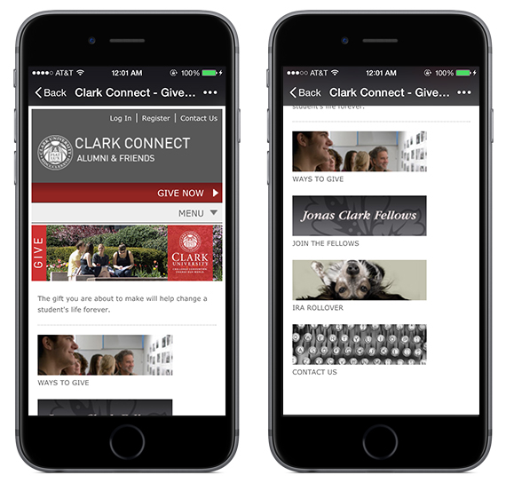
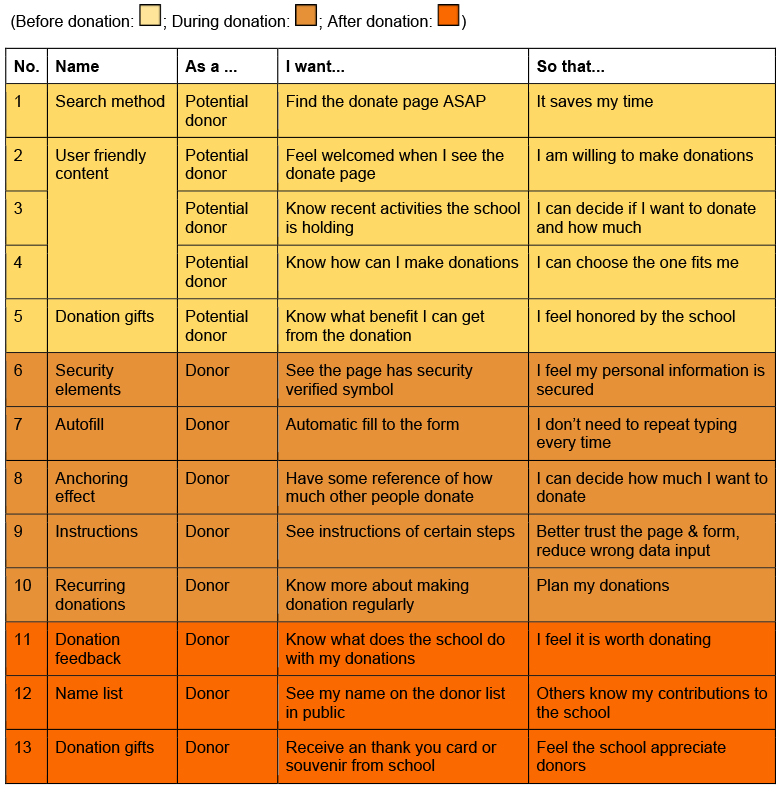
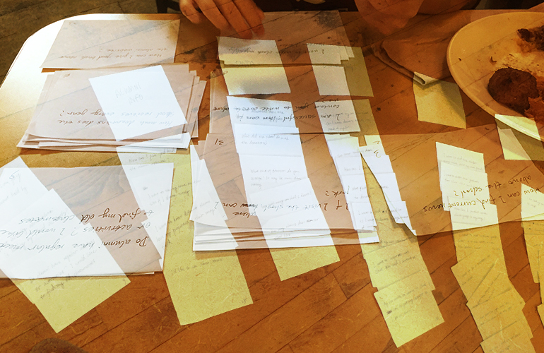
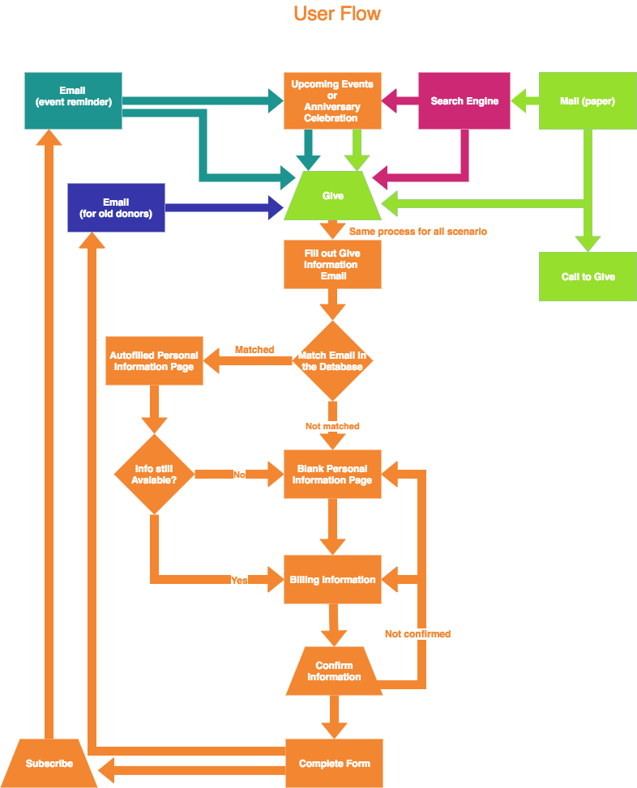
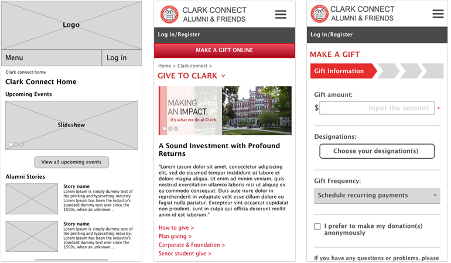
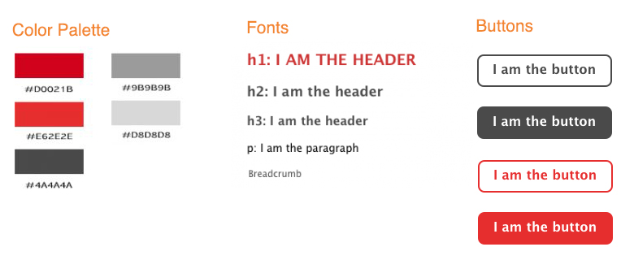

For over twenty years, to connect past students and friends, Clark University’s website has featured an alumni and Clark Fund page in some form. The most recent version of this, called ClarkConnect, combines all of this information with the ability to make online donations.
The donation page and the form are the central parts of ClarkConnect. However, the current page is outdated. This project is a re-design of Clark Give page and Give form from a mobile first perspective. It is also a project I worked on in Springboard’s UX Design Workshop.
Problems:
The current page is bland and boring. Even though Clark has provided visitors lots of info about giving, users are not likely to have any emotional connection by looking at this page. They won't feel engaged or welcomed, they might also have problems making donations through the give form.
Solution:
Start from user centered design, and re-build a smooth and pleasant experience for donors.
After interviewing over 30 people, including current and former students, I gained some insight into how users think about donation and the ClarkConnect website. Some comments were reasonable, some are surprising, and a few are a little confusing:
There are many ways to donate. Big donors or senior donors never make donations online. They would call the school or contact a specialist.
The online form is specially designed for younger generation.
Yes, it is a big difference between laptop and mobile. People tab, people slide, people drag, and they even speak, to avoid typing and spelling as much as possible.
“If you want me to do something, give me a reason! No matter that’s helping others, getting a souvenir or just make me feel emotional. I want a trigger to give out my money.”
It is surprising that a participant felt hard to continue when he is using the current giving form. He stopped because he couldn’t find instructions when he needed, and the form did not seem safe.
How much people would like to donate is mysterious.
In both interviews and surveys, I gave people some amount of money to choose, and also mentioned they can donate any amount they like. The result was, all the people I interviewed would give a number in their mind, some changed their number when I asked twice; and over 90% people in the survey would choose a given number.
Although I interviewed only a small percentage of the total Clark alumni population, their feedback was still extremely helpful in terms of UX design. I also knew I would test and validate their comments later in the usability testing portion of my project.
For competitive analysis, I chose 3 schools (Worcester Polytechnic Institute, Skidmore College and Brandeis University) and compared strengths and weakness in their donation pages. They are similar schools with the same goal as Clark.
From this analysis, I gained these three inspirations:
Two goal-based user patterns emerged from the interviews and questionnaires. They are Jim and Jane.
Jim got his master’s degree in IT security two years ago. He got a decent job after graduation and has a student loan to pay off. Jim loves Clark and would like to do something for the school.
Jane graduated 10 years ago from Clark. She is very sociable and always glad to help people. She donated to Clark before and considering making regularly donations every once a while.
User stories help keep wireframes and visual design focused on user needs. The 13 user stories through the whole donation process are outlined here. The potential donor’s stories (1-5) are as important as real donor’s stories (6-13).
MVP features are not only tied to each user story, but also results from the user test.
Information architecture is the backbone of a site. In this project, I focused on redesigning the give page and the give form, which did not including the whole site. However, card sorting and site maps were a great help toward understanding user's thought and organize website structure.
There were 3 participants volunteered to do card sorting. Some of them had seen the current ClarkConnect site, some had not. The card sorting results from 3 different people are very different: the person who had seen the website sorted the card with old memories, so the result is quite the same as the current site; however, people who had not visited the current site gave two different logic.
After collecting and cleaning up data, I found more similarities than the differences. Especially after renaming groups, merging sub categories and break down large groups. The structure started to be clearer.
3 participants are not enough to create a new structure for a medium size site, but in this project, I got enough information about how people understand the website, which was helpful on the give page redesign.
Unlike the sitemap, this user flow diagram is only about donors and includes “pathways” to ClarkConnect’s give form from four different sources.
I started with low-fidelity sketches and worked up to high-fidelity wireframes. I then create the prototype and put it into InVision for usability testing.

This style guide includes a color palette, typography and button styles for my proposed redesign.

Usability tests were conducted in-person with 5 Clark alumni. From the test and feedback, I categorized problems from deadly to dispensable and improved the prototype.
This project focused on a small but important aspect of the ClarkConnect website, the online donation form UI, but in the process also revealed many new ideas that could be incorporated into the overall UX for alumni and friends. Based on the data collected so far, my top 3 recommendations for the site would include: